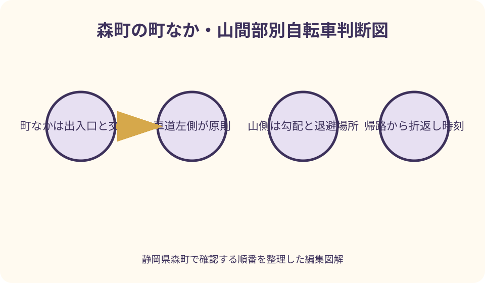
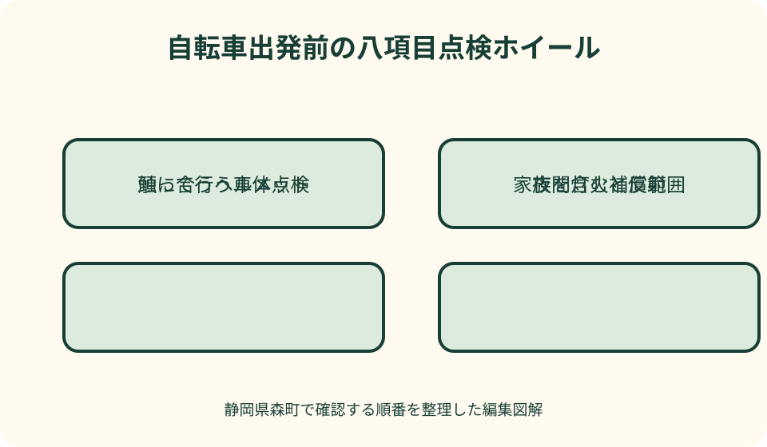

交通・外出・生活動線｜最終確認 2026-08-10
静岡県森町の自転車交通ルール｜ヘルメット・保険・夜間走行を確認
静岡県森町では、平坦な町なかの生活道路から、勾配や見通しが変わる山間部まで、自転車で走る環境に幅があります。交通ルールを知るだけでなく、ヘルメットの適合、保険の補償対象、夜間装備、交差点の通り方、天候と経路、車体の状態を出発前に一つずつ確かめる必要があります。森町・静岡県・県警・警察庁の案内を分けて読み、家族で実行できる確認順へ落とし込みます。

編集イラスト出発前に分ける八つの確認
自転車の準備は、ヘルメットと保険だけで終わりません。走る場所、夜間装備、交差点、子どもの理解、山間部の経路、車体点検までを別項目にすると、購入時の確認と毎回の運転判断を混同せずに済みます。
警察庁の自転車安全利用五則は、車道左側、歩道の例外と歩行者優先、交差点での信号・一時停止、夜間の灯火、飲酒運転禁止、ヘルメット着用を要点として示します。免許が不要でも、自転車は道路交通法上の軽車両です。
静岡県では自転車損害賠償責任保険等への加入が義務づけられています。これは事故後の賠償へ備える制度であり、交通ルールを免除したり、事故を防いだりする装備ではありません。補償内容は契約ごとに確認します。
森町の交通安全ページは、県条例、通学路、ヘルメット補助など町内で確認したい情報の入口です。町の案内、県条例、道路交通法のルールを一つの説明だと思わず、目的ごとに原典へ戻ります。
ヘルメットは対象者と適合を確かめる
道路交通法の改正により、すべての自転車利用者について乗車用ヘルメット着用が努力義務です。運転者だけでなく同乗者、児童・幼児を自転車へ乗せる保護者についても、県警の案内で対象関係を確認できます。
努力義務という言葉を『不要』と読み替えないことが大切です。ヘルメットは衝突そのものを避ける道具ではありませんが、転倒や事故時の頭部への衝撃軽減を目的とするため、近距離でも着用を生活動線へ組み込みます。
選ぶ際は、安全性を示す認証、頭囲への適合、あごひもの調整、視界と聴覚を妨げない形を確認します。大きすぎる物を成長待ちで使ったり、衝撃を受けた物を外観だけで使い続けたりせず、メーカーの取扱説明に従います。
帽子の上から不安定に載せる、あごひもを締めない、荷物と一緒に乱暴に保管する状態では、本来の装着を期待できません。出発前に左右のずれ、深さ、留め具を本人と家族で指差し確認します。
森町のヘルメット補助は年度条件を読む
森町は自転車乗車用ヘルメットの購入費補助を案内しています。対象者、購入年度、初回申請、対象製品、町内店舗での購入、領収書など現年度の条件が掲示されているため、購入後ではなく購入前に公式ページを開きます。
補助ページに挙げられた認証マークは、申請対象を確かめる手掛かりです。ただし、補助対象になったことと、個々の頭に正しく合うことは別の確認です。試着できる場合は、頭囲と固定状態を確かめます。
学校指定品や学校行事で使う物など、補助対象から外れる条件が示される年度もあります。通学用だから当然対象、町民なら購入場所を問わないと決めず、申請書、添付書類、受付時点の案内を読みます。
補助金額や受付期間は将来変わり得ます。この記事では購入可否や支給を保証せず、購入日、製品名、認証表示、販売店、領収書の記載を森町の現行案内と照合する順を勧めます。
自転車保険は加入名より補償対象を見る
静岡県の条例では、自転車利用者に自転車損害賠償責任保険等への加入が義務づけられています。県のFAQでは施行時期や対象関係を案内しているため、家族の誰がどの契約で補償されるかを確認します。
自転車専用保険だけが選択肢とは限らず、個人賠償責任の特約が火災保険、自動車保険、共済、クレジットカード等へ付いている場合があります。ただし名称だけで、自転車事故、家族、未成年を含むとは断定できません。
確認票には、契約先、証券番号、被保険者と家族の範囲、賠償限度、示談交渉サービスの有無、事故時連絡先、更新日を書きます。傷害補償と他人への賠償は役割が違うため、同じ欄に丸を付けません。
学校や勤務先、レンタサイクル側の補償があっても、自宅からの利用、休日、借りた車両以外まで含むとは限りません。重複加入や空白期間を避けるため、約款または契約窓口へ具体的な利用場面を伝えます。
車道左側が原則、歩道は例外
自転車は車道通行が原則で、道路の左側を通行します。右側を逆走すると、対向する自転車や交差点から出る車との関係が崩れます。目的地が右側でも、道路を横切って右側通行を続ける判断はしません。
歩道を通行できるのは、標識等で認められる場合、運転者の年齢や身体の状態に関する例外、車道の状況からやむを得ない場合など、法令上の条件があると警察庁は説明しています。便利さだけで歩道を選びません。
歩道を通行する場合も歩行者優先です。歩道中央ではなく車道寄りを徐行し、歩行者の通行を妨げるときは一時停止します。ベルで歩行者を移動させる前提にせず、降りて押す判断を持ちます。
車道が怖いと感じる場所では、無理に速度を上げるのでも、無条件に歩道へ移るのでもありません。道路標識、路肩、交通量、見通しを確かめ、危険なら安全な場所で停止し、別経路や徒歩へ切り替えます。
路側帯・自転車道・矢羽根を混同しない
路側帯、歩道、自転車道、車道上の矢羽根型表示は見た目が似ていても、通行方法が同じとは限りません。白線の内側なら必ず自転車専用という理解を避け、標識と道路の構造を確認します。
矢羽根型表示は、自転車の通行位置や方向を示す目安として路面に設置されますが、その表示だけで自動車が入らない専用空間になるとは限りません。駐停車車両や左折車の動きにも注意が必要です。
路肩が狭い場所で大型車が近づいたら、端へ寄り続けて側溝へ落ちないことも重要です。後方を振り返ってふらつかず、前方の退避できる場所を早めに見つけ、必要なら停止して通過を待ちます。
自転車通行空間の表示は整備や工事で変わる場合があります。以前走った記憶や地図画像を確定情報にせず、現地標識を優先し、意味が分からない表示は県警の最新ルールページで確認します。

交差点は進入前に速度を落とす
交差点では信号に従い、一時停止標識がある場所では停止して安全を確認します。停止線を越えてから止まるのではなく、見通しが悪い場合は停止後に安全を確かめられる位置まで慎重に進みます。
自転車の右折は、原則として交差点の向こう側まで直進し、向きを変えて進む二段階の動きになります。自動車のように中央寄りから斜めに右折しないよう、経路を出発前に地図で確認します。
左折車の内側へ入り込むと、運転者の死角に入る可能性があります。信号待ちで大型車の左脇へ進まず、車両の方向指示器、車輪、車体の向きを見て、巻き込みが起きる位置を避けます。
信号のない小さな交差点も、住宅や生け垣で左右が見えにくいことがあります。自分が優先だと思って速度を保たず、ブレーキへ指を掛け、歩行者、自転車、車の存在を確認できる速度へ落とします。
夜間灯火と反射材を役割で分ける
夜間は前照灯を点灯します。点滅だけの小さな補助灯が法令上必要な前照灯の代わりになるかを自己判断せず、明るさ、照射方向、取付けの安定、電池残量を製品説明と現行ルールで確かめます。
前照灯は前方を見るためだけでなく、自分の存在を相手へ伝える役割があります。夕暮れは目が慣れていても車側から見えにくくなるため、暗くなってからではなく、見え方が変わる前に点灯します。
後部の反射器材や尾灯は、後方から近づく車に位置を知らせます。泥や荷物で隠れていないか、反射面が割れていないかを確認し、バッグや上着の反射材は補助として組み合わせます。
強すぎるライトを上向きにすると、対向者の視界を妨げることがあります。照射角を路面側へ調整し、夜道で故障した場合は無灯火のまま走り続けず、安全な場所で停止して徒歩や迎えへ切り替えます。
雨・霧・強風では乗らない選択を持つ
雨天は制動距離、路面の滑りやすさ、視界が晴天時と変わります。白線、マンホール、落ち葉、鉄板、砂利は滑る可能性があり、傘差し運転を避けるだけで危険がなくなるわけではありません。
レインウェアは両手を使える一方、フードが左右確認を妨げたり、裾が車輪へ絡んだりすることがあります。乗車姿勢で視界と可動域を確認し、靴や荷物を含めた装備を整えます。
山あいでは霧、路面流入水、落枝が発生することがあります。出発時に小雨でも、目的地や帰路の状況は異なるため、森町の防災情報や県の道路規制情報、気象情報を直前に見ます。
警報、雷、強風、冠水、通行止めの情報があるときは、自転車だから通れると考えません。予定を延期する、公共交通へ替える、家族送迎を頼むなど、出発しない判断を最初から計画へ入れます。
子どもは年齢だけで走行可否を決めない
子どもが歩道を通行できる法令上の例外と、一人で安全に走れるかという家庭の判断は別です。発進、停止、後方確認、合図、交差点、一時停止を実際の動作で確認し、できない区間は押して歩きます。
練習場所から公道へ移るときは、交通量の少ない短い区間を選び、大人が前後どちらを走るかを決めます。並走して道幅を占めず、声掛けの言葉を『止まる』『左へ寄る』など短く統一します。
幼児用座席を使う場合は、車体と座席の適合、年齢・体格、乗せ方、転倒防止、ヘルメットを製品説明と現行ルールで確認します。子どもを乗せたまま自転車から離れたり、支える手を離したりしません。
学校の通学ルールや指定経路がある場合は、一般の道路交通ルールに加えて学校の案内を確認します。友人と一緒なら安全とは限らず、横並び、急な進路変更、会話による注意散漫を家庭でも話します。
町なかの生活動線を時間帯で見る
遠州森駅周辺や商店、学校、公共施設へ向かう町なかでは、交差点、駐車場の出入口、路上駐車、歩行者が重なります。距離が短くても、朝夕と昼間で交通の流れが変わるため、利用時刻に近い時間に経路を確認します。
店舗前では、駐車車両のドアが開くことや、車の陰から歩行者が出ることを想定します。停車車両を避けるため急に中央へ出ず、後方確認と進路変更の合図を行える距離を確保します。
踏切では警報機や遮断機に従い、線路の溝へタイヤを取られない角度で通ります。混雑して向こう側へ抜けられないときは進入せず、前車との間を空けて待ちます。
駐輪時は通路、点字ブロック、出入口、避難動線を塞がず、施設の指定場所を利用します。短時間だからと歩道へ置くと、歩行者や車いすの通行を妨げ、転倒の原因にもなります。
山間部では勾配と帰路を先に読む
天方・三倉方面やアクティ森周辺など山側へ向かう計画では、距離だけでなく標高差、連続する上り、下りの急さを確認します。往路で体力を使い切らず、帰路の向かい風や日没も含めて折返し時刻を決めます。
下り坂は楽に距離を進める反面、速度が上がり、制動距離が延びます。カーブへ入ってから強く握るのではなく、その手前で速度を落とし、前後ブレーキを急激に片側だけ掛けない操作を練習します。
狭い道路では大型車、農作業車、落石、枝、砂、側溝に注意します。後続車を意識して無理に端へ寄り続けず、見通しのよい退避場所で停止できるよう、地図上で候補を確認します。
山間部は店舗や修理先、通信、街灯が限られる区間があります。水、補給食、予備灯、連絡先を持っていても走破を保証するものではなく、体調や機材に異常があれば早い段階で引き返します。
出発前点検は触って確かめる
タイヤは空気圧、亀裂、異物、摩耗を確認します。指で押した感触だけに頼らず、車体やタイヤに示された条件と使用する空気入れの計器を確認し、長く放置した車体は整備店で見てもらいます。
ブレーキは前後を別々に握り、レバーがハンドルへ付き切らないか、車輪を止められるか、異音や片効きがないかを確かめます。坂道へ入る前ではなく、平坦な安全な場所で低速確認を行います。
ハンドル、サドル、ペダル、車輪にがたつきがないか、チェーンが外れかけていないか、泥よけや荷台がタイヤへ触れていないかを見ます。異常を見つけたら締付け方法を推測せず、販売店や整備店へ相談します。
前照灯、尾灯・反射器材、ベルは作動と取付けを確認します。電動アシスト自転車ではバッテリー残量だけでなく、車両区分に適合する製品か、取扱説明に沿って使用しているかも確認します。
荷物と服装で車体を不安定にしない
ハンドルへ重い袋を掛けると、操作やブレーキレバーを妨げます。荷物は適合するかごや荷台へ固定し、幅や高さでライト・反射器材を隠さないよう、積載後に正面と後方から見ます。
肩から下げた長いひも、裾の広い服、ほどけた靴ひもは車輪やチェーンへ巻き込まれる可能性があります。乗車姿勢でペダルを回し、服や荷物が動く範囲を出発前に確かめます。
スマートフォンを手に持つ、画面を見続ける、イヤホン等で必要な音や声が聞こえない状態は、危険の発見を遅らせます。経路確認は安全な場所へ停止してから行い、通知へ反応しない設定を使います。
買い物帰りは往路より荷物が増えます。容量を超えそうなら配送、家族の迎え、二回に分ける方法へ切り替え、片手に袋や傘を持った運転を前提にしません。

事故・故障時は二次事故を避ける
事故が起きたら、まず可能な範囲で交通の危険を避け、負傷者の救護と警察への連絡を行います。外傷が小さく見えても、その場で当事者だけの話し合いを終わらせず、必要な対応を公的案内と保険会社へ確認します。
相手、場所、時刻、状況を記録しますが、車道上で撮影を続けて二次事故を招かないことが優先です。家族の緊急連絡先と保険窓口をスマートフォンだけでなく、紙でも携帯すると電池切れに備えられます。
パンクやチェーン外れで走行が不安定になったら、そのまま目的地まで乗り切ろうとしません。安全な場所へ移動し、押して歩く、家族へ迎えを頼む、修理店へ相談するなど車体を使わない代案へ移ります。
山間部で通信できない区間へ入る前に、予定経路と帰宅時刻を家族へ伝えます。ただし共有したことは救助や安全を保証しません。異常の兆候がある段階で人のいる場所へ戻る判断が重要です。
良い点
森町が交通安全情報とヘルメット購入補助のページを設けているため、町民は交通ルールの入口と現年度の支援条件を町公式から確認できます。県警や警察庁への導線も合わせれば、根拠の違いを追えます。
自転車は徒歩より行動範囲を広げ、駅、学校、買い物、公共施設をつなげられます。燃料を使わず、駐車場所も小さくできますが、その利点は歩行者優先と車両としての責任を守ることが前提です。
出発前点検を毎回同じ順にすると、空気不足、灯火の電池切れ、ブレーキの違和感を早く見つけられます。家族で点検語を統一すれば、子どもも『乗れるか』ではなく『確認してから乗る』習慣を持てます。
経路を町なかと山間部で分けると、体力や技量に合う選択がしやすくなります。目的地へ着くことを唯一の成功とせず、途中で公共交通や迎えへ替える余地を残すことも、移動計画の質です。
注文したい点
利用者の立場では、森町公式の交通安全入口から、保険、ヘルメット、町内の自転車事故傾向、通学路の注意点を一つの現行一覧で確認できると、家族が年度ごとの差を追いやすくなります。
ヘルメット補助は年度、購入場所、製品、学校用途など条件が具体的です。購入後に対象外と分かることを避けるため、店頭で確認できる短いチェック表と公式ページの更新日がより目立つ案内を期待します。
町なかから山間部へ移る自転車利用者には、距離だけでなく勾配、トンネル、補給、通行規制を確認できる入口が必要です。観光向けコースと日常移動を分け、初心者が無理な経路を選ばない情報設計が望まれます。
交通ルールは改正されるため、古いチラシが検索結果に残ることがあります。閲覧者側も日付を確認し、特に交通反則通告制度や取締りに関する説明は、警察庁・県警の現行ページへ戻る必要があります。
代案・結論
車道に強い不安がある、雨や強風がある、車体に異常があるときは、乗車を中止するのが第一の代案です。押して歩く、天浜線やバスを使う、家族送迎へ替える、外出日を変える順で現実的な方法を選びます。
子どもが交差点動作を理解できない場合は、公道で距離を延ばさず、安全な練習場所へ戻ります。ヘルメットや保険がそろっていることを一人乗りの許可条件にせず、操作と判断を大人が観察します。
夜間に灯火が使えない、帰路で電池切れが見込まれるなら、日没前に戻るか予備灯を準備します。それでも見通しや体調に不安があれば、駐輪可能な場所を確認して自転車を置き、迎えを頼みます。
結論として、森町での自転車利用は、ルール、ヘルメット、保険、経路、天候、点検を出発ごとに組み合わせます。どれか一つを満たせば安全という考えを捨て、走らない選択を常に残してください。
大石の視点
森町で暮らしの移動を考えると、自転車は車を運転しない家族の大切な足になります。一方で、住宅地の細い道、県道への合流、山側の勾配では同じ距離でも負担が違い、物件から目的地までの直線距離だけでは判断できません。
住まいを選ぶ際は、最寄り駅や学校までの距離に加え、歩道、交差点、街灯、坂、駐輪場所を実際の利用時刻に見ます。晴れた休日の下見だけで、雨の通学や冬の帰宅を想定したことにはなりません。
家族で一台を共用するなら、サドルの高さ、ヘルメットのサイズ、保険の対象を利用者ごとに確認します。大人に合う設定を子どもがそのまま使うと、停止時に足が届かず、発進時のふらつきにつながります。
安全は『気を付ける』という言葉だけでは作れません。朝の三分点検、交差点での停止、日没前の帰宅時刻、乗らない条件を紙にし、日常の小さな判断へ落とすことが森町で長く使える自転車計画です。
家族で使う出発前チェック
最初に体調と天候を見ます。眠気、発熱、強い疲労、雨、風、雷、道路規制のどれかがあれば、装備確認より先に移動方法を変更します。予定へ遅れそうでも、速度を上げて取り戻す計画は立てません。
次にヘルメット、保険、服装、荷物を確認します。あごひも、対象者の補償、ひもの巻込み、ライトを隠す荷物を見て、保険連絡先と家族連絡先を携帯します。
車体はタイヤ、ブレーキ、ハンドル、サドル、チェーン、ライト、反射器材、ベルの順に触って見ます。異音、がたつき、空気不足が一つでも残れば、公道で試さず整備へ回します。
最後に経路、交差点、帰宅時刻、途中中止地点を家族へ共有します。町なかでも山間部でも、ヘルメット着用や保険加入は無事故を保証しません。現地の標識と状況に従い、迷ったら停止して確認します。
公式情報・確認先
掲載内容は次の一次情報を基礎に整理しました。営業、料金、催し、交通は変わるため、出発前または手続き前にリンク先で最新情報を確認してください。
- 交通安全（静岡県森町、2026-08-10確認）
- 森町自転車乗車用ヘルメットの購入費補助事業について（静岡県森町、2026-08-10確認）
- 防災情報（静岡県森町、2026-08-10確認）
- 自転車条例に関するよくある質問（静岡県、2026-08-10確認）
- 自転車の交通事故防止について（静岡県警察、2026-08-10確認）
- 自転車乗車用ヘルメットの着用努力義務化について（静岡県警察、2026-08-10確認）
- 自転車の交通ルール（警察庁、2026-08-10確認）
- 自転車は車のなかま（警察庁、2026-08-10確認）